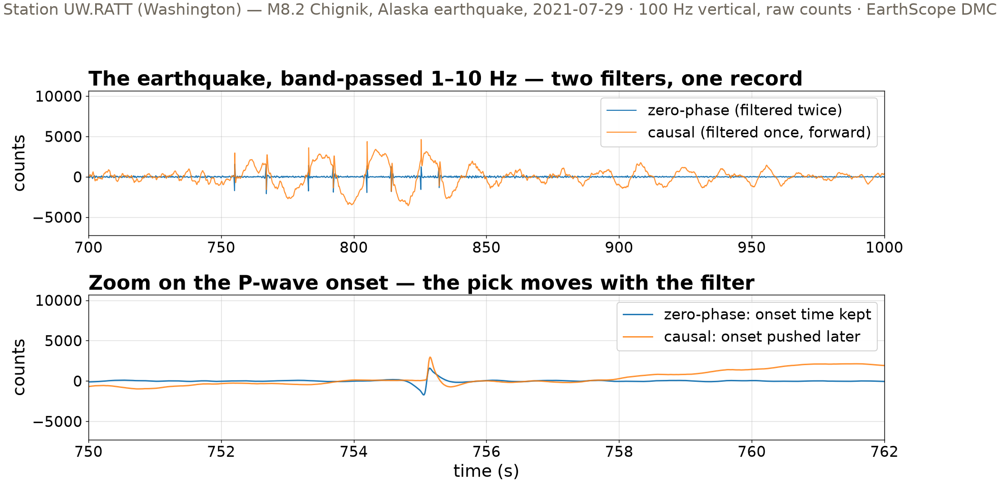
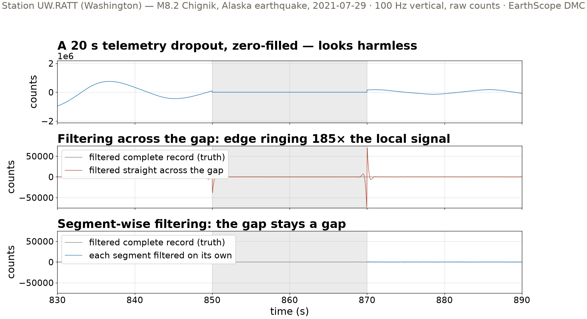
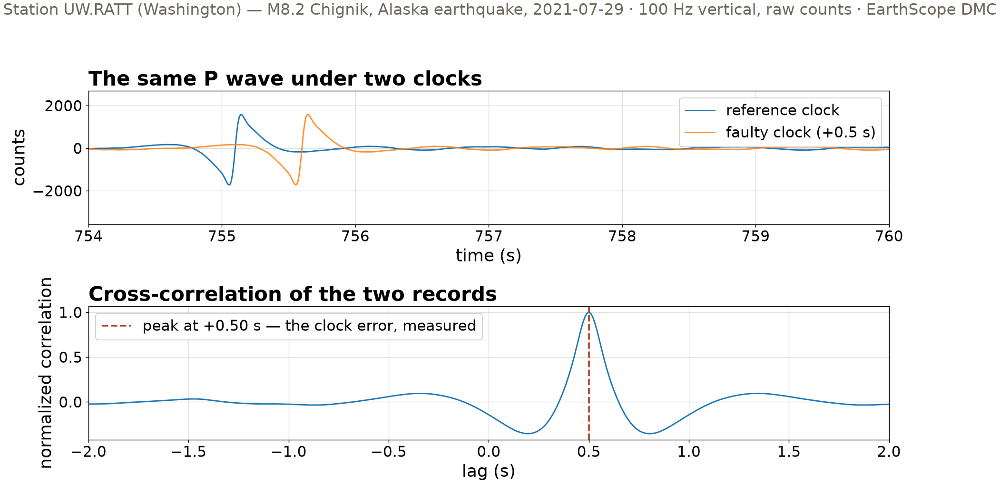

Session 8 · Fri Oct 16 · Book section 2.9
🩹
The archive hands you a broken record.
What may you repair — and what must stay broken?
Reading: 2.9 Filtering data
📖 The textbook: what filters and instrument responses actually do to a seismogram.
Scherbaum, F. (1996). Of Poles and Zeros: Fundamentals of Digital Seismology. Kluwer Academic Publishers.
✓ Doing it right: how filter and baseline choices change the ground-motion numbers engineers build on.
Boore, D. M. & Bommer, J. J. (2005). Processing of strong-motion accelerograms: needs, options and consequences. Soil Dynamics and Earthquake Engineering, 25, 93–115.
✗ A celebrated earthquake precursor, undone two decades later — the anomaly lived in the instrument, not the Earth.
Fraser-Smith, A. C., et al. (1990). Low-frequency magnetic field measurements near the epicenter of the Ms 7.1 Loma Prieta earthquake. Geophysical Research Letters, 17, 1465–1468. — Thomas, J. N., Love, J. J. & Johnston, M. J. S. (2009). On the reported magnetic precursor of the 1989 Loma Prieta earthquake. Physics of the Earth and Planetary Interiors, 173, 207–215.
Processing choices are science choices — the literature has celebrated artifacts and retracted precursors to prove it.
Same honesty pattern as Wednesday’s b-value: plant the truth, then grade the method.

Causal filtering pushes the onset later (phase delay). Zero-phase keeps the time but leaks energy before the onset. Neither is wrong — each answers a different need.

Zero-filling creates two step discontinuities. A step is broadband — the filter answers with its own ringing, and inside the gap it draws plausible-looking wiggles that are pure artifact.
185× edge ringing vs local in-band signal — filtered across the gap
1.7× same measure after segment-wise filtering
Measured 0–2 s from the gap edges against the intact-record truth: ringing of 12,998 counts over a local signal of 70 counts RMS. Beyond 2 s, the segment-wise error falls to ~0.
Two orders of magnitude, and the residual damage is confined to ~2 s of filter memory — flag that guard interval in your metadata.

A 0.5 s timing error leaves the waveform perfect and corrupts only the timestamps — invisible to the eye, fatal for phase picks. Cross-correlation reads it back exactly: +0.50 s.
NaN — declared missing, not repairedAn honest record carries its scars and its repair log — that log becomes the data card in 2.13.
| Pathology | What it does | The repair | Where you’ll meet it |
|---|---|---|---|
| Filter phase | moves or decorates the onset | pick causal vs zero-phase for the task | early warning vs tomography picks |
| Zero-filled gap | edge ringing 185× local signal | segment-wise filtering + guard interval | telemetry dropouts, careless merges |
| Clock error | timestamps lie, waveform looks fine | cross-correlation lag, then correct + log | GPS clock failures, ocean-bottom sensors |
The unbroken record graded every number in this table — plant truth before you trust a repair.
pixi run jupyter lab → 2.9_filtering_data.ipynbMonday: synthetic data with known truth, the detection floor (2.10–2.11) · Reading-arc stage 1 due Wed Oct 21
ESS 469/569 · Machine Learning in the Geosciences · Autumn 2026